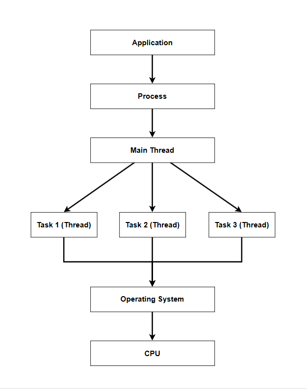
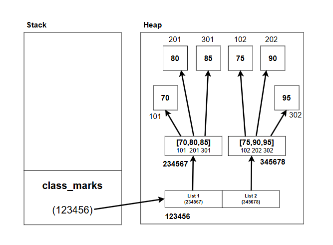

Date: 26 June 2026
Duration: 2:00 Hrs
Training Company: Auribises Technologies
Trainer: Ishant Kumar
The second day focused on a deeper understanding of MVC Architecture, Python fundamentals, memory management, and the internal working of variables, references, stack memory, and heap memory.
The trainer introduced the special Python variable
__name__. It was explained that variables beginning
and ending with double underscores are commonly referred to as
dunder variables (double underscore variables).
The __name__ variable helps Python determine whether a
file is being executed directly or imported as a module.
MVC Architecture was discussed in greater depth. The trainer explained how the Model, View, and Controller components can be mapped to Python applications.
The trainer explained how an application runs as a process and how multiple threads can be created from the main thread. The role of the Operating System and CPU in process execution was also discussed.

The trainer explained how Python stores variables and objects using stack and heap memory. Variables act as references while actual objects are stored in heap memory. The concepts of reference variables, literals, and object identities using the id() function were also discussed.
id() function was used to observe object identities.
Using the id() function, the trainer demonstrated how
Python objects are assigned unique identifiers. These identifiers
helped visualize how reference variables point to objects stored in
memory.
Created a basic Python program using print statements to display text output.
print(__name__)
print('hello world')
print("This is awesome")
print("""This is amazing""")
Demonstrated variables, literals, reference variables,
id(), type(), and object deletion using
the del keyword.
Demonstrated user input and type conversion using the
input() and int() functions.
age = int(input("Enter Age:"))
print(age)
Demonstrated Python containers, lists, tuples, nested lists, mutability, and memory storage concepts.
The trainer explained the concept of containers in Python.
Homogeneous containers store values of the same type while heterogeneous containers can store values of different types.
Example of a homogeneous collection.
[70, 80, 85]
Example of a heterogeneous collection.
[70, 80, 85, "A", "B"]
The trainer assigned an activity to explain how a list of lists is stored in stack and heap memory.
class_marks = [
[70, 80, 85],
[75, 90, 95]
]
To understand this concept, I created the following memory representation showing how the outer list stores references to inner lists and how the actual objects are allocated in heap memory.

The reference variable class_marks resides in stack memory and
points to the outer list object. The outer list further stores references
to the inner lists, which contain the actual values stored in heap memory.
Today's session provided a deeper understanding of how Python works internally. Learning about references, memory management, stack and heap storage helped me understand what happens behind the scenes when variables and objects are created. The practical examples and memory diagrams made these concepts easier to visualize.
The trainer will continue with Python fundamentals and further explore MVC-based application development.